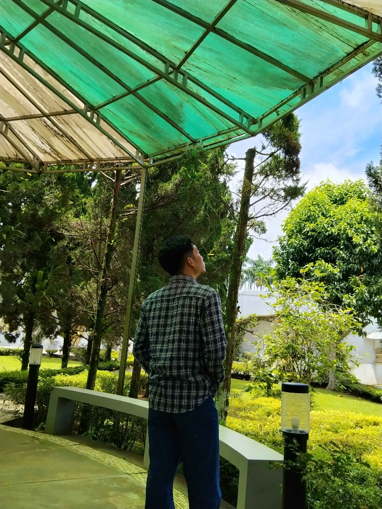

Lulusan Manajemen Perkantoran dan Layanan Bisnis berintegritas tinggi dengan rekam jejak praktis di bidang administrasi persuratan, pelayanan publik, operasional kasir, rekonsiliasi omset, serta pengelolaan inventaris yang teliti dan terorganisir.

Lulusan SMK Muhammadiyah 01 Ciputat (2022–2025)
Kombinasi disiplin administratif yang terstruktur dengan etos kerja berenergi positif.
Perkenalkan, saya Chandra Arya Ferdiyansah, lahir di Jakarta pada 14 November 2006. Dengan latar belakang pendidikan dalam Manajemen Perkantoran dan Layanan Bisnis serta pengalaman kerja langsung di sektor pelayanan instansi pemerintah dan operasional retail/F&B, saya siap membawa energi positif ke dalam dunia profesional.
Saya memiliki pemahaman kokoh mengenai tata kelola perkantoran modern, pengarsipan berkas, pendataan inventaris, serta pelayanan prima terhadap warga dan pelanggan. Tujuan karir saya adalah dapat berkontribusi nyata dalam memajukan dan mensejahterakan perusahaan tempat saya bertumbuh.
Terlatih melayani warga secara ramah dan profesional serta berkoordinasi lancar bersama tim kerja.
Mampu memprioritaskan pekerjaan administratif, mengejar target outlet harian, dan disiplin tinggi.
Dapat dipercaya dalam pengelolaan kas kecil (petty cash), rekapitulasi omset, serta akurasi stock opname.
Cermat dalam memeriksa kelengkapan surat resmi, nomor registrasi, dan verifikasi arsip penting.
Pengalaman langsung di bidang operasional, tata kelola kearsipan, dan pelayanan masyarakat.
Fondasi keilmuan manajemen perkantoran didukung keahlian teknis dan kepribadian adaptif.
Menempuh pendidikan kejuruan intensif dengan fokus keahlian pada otomatisasi tata kelola perkantoran, sistem layanan bisnis terintegrasi, korespondensi resmi, etika komunikasi profesional, serta manajemen kearsipan dan basis data.
Penyusunan surat resmi, pengetikan format laporan kerja & tata kelola korespondensi
Input data transaksi, pengoperasian formula kalkulasi & rekapitulasi omset harian/bulanan
Perancangan slide presentasi bisnis, infografis informatif & visualisasi data materi
Pengelolaan uang kas kecil (petty cash), operasional mesin kasir & penghitungan stock opname
Klasifikasi sistematis arsip dokumen masuk/keluar serta pencatatan inventaris barang fisik
Terbuka untuk posisi administrasi, kasir, operasional bisnis, maupun konsultasi kerjasama karir.